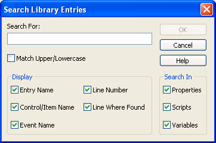
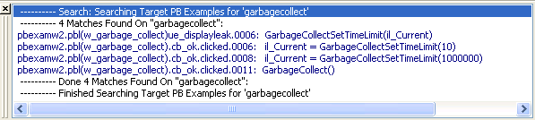

You can search a target to locate where a specified text string is used. For example, you could search for:
 Working with targets To see the pop-up menu that lets you perform operations on
a target, such as search, build, and migrate, you must set the root
of the System Tree or the view in the Library painter to the current
workspace.
Working with targets To see the pop-up menu that lets you perform operations on
a target, such as search, build, and migrate, you must set the root
of the System Tree or the view in the Library painter to the current
workspace.
You can also select a library or one or more PowerBuilder objects to search. The following procedure applies whatever the scope of your search is.
 To search a target, library, or object for a text
string:
To search a target, library, or object for a text
string:
Select the target, library, or objects you want to search.
You can select multiple objects in the List view using Shift+Click and Ctrl+Click.
Select Search from the pop-up menu or the PainterBar.
The Search Library Entries dialog box displays.

Enter the string you want to locate (the search string) in the Search For box.
The string can be all or part of a word or phrase used in a property, script, or variable. You cannot use wildcards in the search string.
In the Display group box, select the information you want to display in the results of the search.
In the Search In group box, select the parts of the object that you want PowerBuilder to inspect: properties, scripts, and/or variables.
Click OK.
PowerBuilder searches the libraries for matching entries. When the search is complete, PowerBuilder displays the matching entries in the Output window.
For example, the following screen displays the results of a search for the string garbagecollect:

From the Output window, you can: